There are two types of Application Bounce Requests
Hard – This is where the Application is brought completely down before being brought back up. Used when Application functionality has to be stopped to enact a change or fix an issue.
Rolling – This is where the Application is bounced one Server at a time to maintain functionality during the bounce. Used when an Application cannot afford to be completely down.
Log in to the Enterprise Support Portal and Navigate to the Application Services Queue. If you need assistance with this please go here:
http://qtomanetvta44.dev.qintra.com/etsrefkit/portal/appservice.html
The first thing to check is whether the Request is classified as an Emer (Emergency) or not and whether the Application is Managed or Unmanaged. If the application is Unmanaged then you may proceed with working the request immediately. If it is Managed and an Emer then you may still proceed. If its Managed and not an Emer then you must adhere to the Build Schedule displayed at this link:
http://enterprisetest.dev.qintra.com/ETWorkProg/InstWindMgmt.aspx
Click the Edit Request button to Assign the Request to yourself and put the Request Status into Work in Progress
Save the changes by clicking the green Checkmark and your request should look like this with Assigned To being your name and the Status being Work in Progress
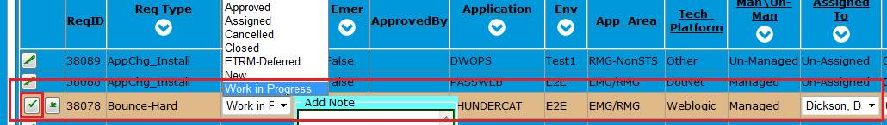
Navigate to the Enterprise Inventory page by clicking the Inventory link under the Inv. & Maint. Menu at the top of the Portal Screen.
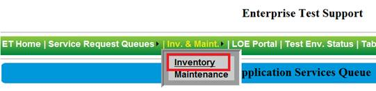
Select Inventory then Applications and finally Applications – All to bring up all the applications under the Enterprise inventory.
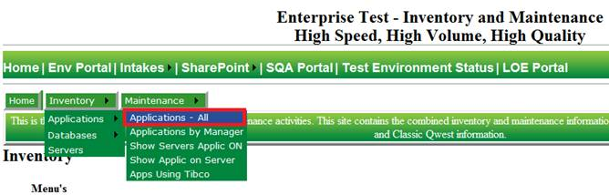
Find the appropriate Application Inventory Information page by using the correct filters. In this case by looking at the Bounce Request information select the Weblogic Test Platform and E2E Environment.
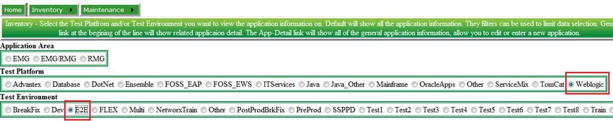
Once you've found your specific application information page on the far right there is a column heading called Install_Tool. If this says anything else besides WLSDeploy you will most likely not be able to use the Automated bounce functions in the Java Install Manager tool.
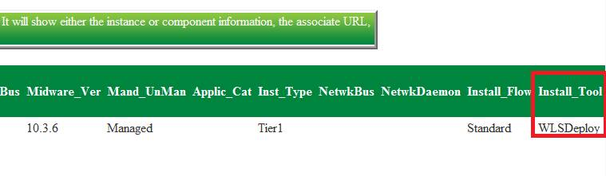
Launch the Java Install Manager. If you need assistance with that you can click Here
Using the Request as a reference select the appropriate Env and Application listed in the request in the JavaIM tool Application Bounce Utility section.
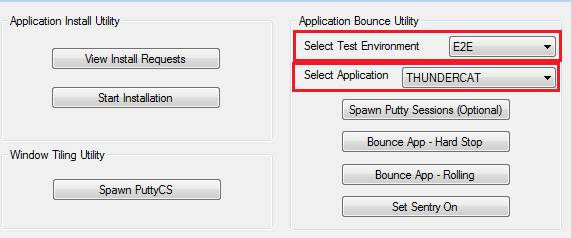
Next depending on the Req Type select either the Bounce App – Hard Stop or Bounce App – Rolling. In some situations depending on the Application you may have to use the Spawn Putty Session (Optional) but that will not be covered here.
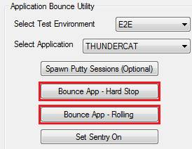
The Java Install Manager will automatically turn off the Sentry Alarming application during and back on after the bounce is complete.
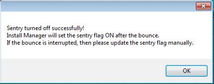
Java IM will automatically then spawn all the needed terminal windows and launch the automated bounce request scripts needed to perform a Hard Bounce
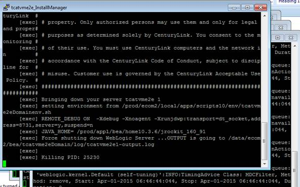
While the script is running your will see this message display after a server has been bounced successfully.
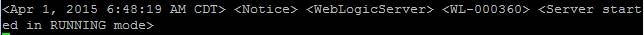
When the bounce is complete and everything went ok you will see a message like this in the InstallManager terminal window.
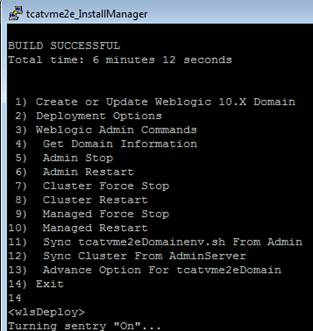
After the bounce is complete you need to then reference the Application Inventory page Test_URLs section to verify the application is up and running properly. You must test each URL.
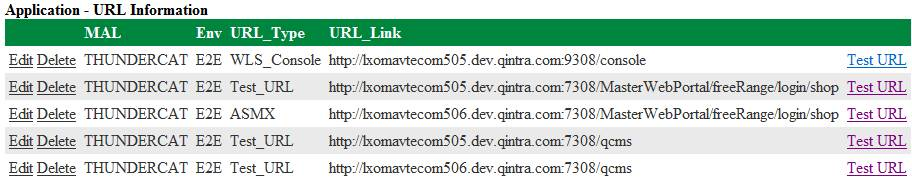
Once you have verified that each URL works as expected you can then go back to the Request Portal and close out the bounce request. Click on the green checkmark to close out the request.
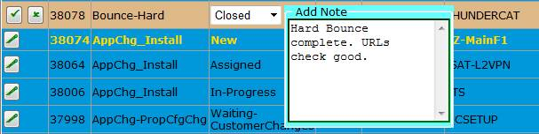
You will see this pop-up window once the request is closed and the automated email sent out.
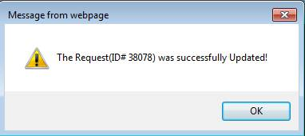